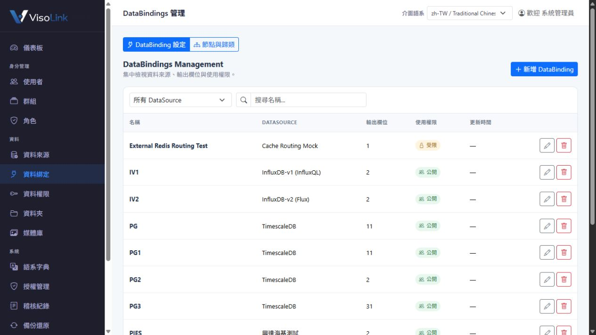
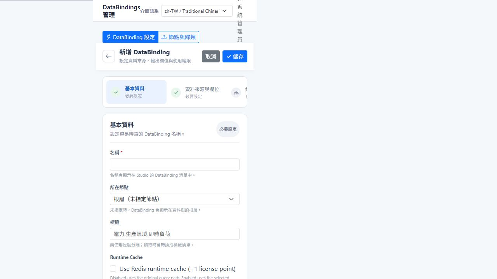
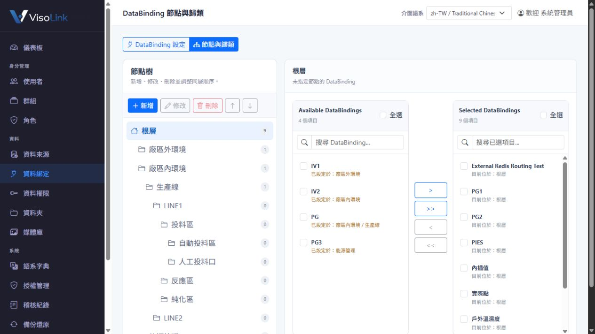

DataBindings
DataBinding 將一個或多個 View 的時間與輸出欄位整理為 Studio 可使用的資料物件，並可設定使用權限及 Runtime Cache。
瀏覽 DataBindings 清單

- 點選「資料 → 資料綁定」。
- 依名稱找到 DataBinding。
- 點選列或鉛筆進入 Editor。
建立與編輯 DataBinding

- 點選新增 DataBinding，或開啟既有項目。
- 依序完成基本資料、來源與欄位、結果預覽及使用權限。
- 確認必要設定標示完成。
- 點選儲存並返回清單。
DataBinding 出現在清單，輸出欄位數與權限狀態正確。
設定 DataBinding 基本資料
- 輸入 Studio 使用者能辨識的名稱。
- 選擇所在節點並加入適當標籤。
- 名稱避免只使用設備代碼；標籤用於搜尋與分類。
設定資料來源與輸出欄位
- 新增來源，選擇 DataSource 與 View。
- 指定 View 的時間欄位。
- 搜尋並勾選要輸出的欄位。
- 多來源時逐一確認時間與欄位命名。
- 移除不再使用的來源。
預覽 DataBinding 結果
結果預覽呈現來源合併後的輸出結構，用來在進入 Studio 前發現欄位與時間問題。
- 完成來源與欄位後切換「結果預覽」。
- 確認時間欄位、輸出欄位與來源關係。
- 回到來源區修正缺漏，再重新檢查。
預覽欄位完整且時間關係正確，Studio 可辨識相同輸出。
設定 DataBinding 使用權限
- 進入「使用權限」。
- 選擇「指定使用者與群組」或「所有已登入使用者」。
- 限制模式下新增 User／Group Allow 或 Deny 規則。
- 儲存後以代表性帳號驗證 Studio Data Browser。
注意：DataBinding 使用權限控制能否在前台使用；不取代 DataSource、Display 或 Folder 權限。
設定 Runtime Cache
- 在基本資料開啟 Runtime Cache。
- 選擇可用的 Cache Server。
- 儲存後在 Cache Management 查看服務與 Key 狀態。
- 多台設備時依工作負荷及管理規則進行分流。
刪除 DataBinding
- 先確認 Studio「已使用」及相關 Display 引用。
- 完成元件改綁與驗證。
- 在清單點選刪除並確認。
- 確認 Studio 不再顯示舊項目。
管理 DataBinding 節點

- 進入 DataBinding 節點與歸類。
- 新增節點並設定名稱與上層節點。
- 使用上移／下移調整同層順序。
- 修改上層前確認子節點路徑影響。
將 DataBinding 歸類至節點
- 選取左側目標節點。
- 在 Available 清單搜尋並勾選 DataBinding。
- 使用箭頭移至 Selected；需要移除時反向操作。
- 點選「儲存歸類」。
- 回到 Studio Data Browser 確認分類階層。